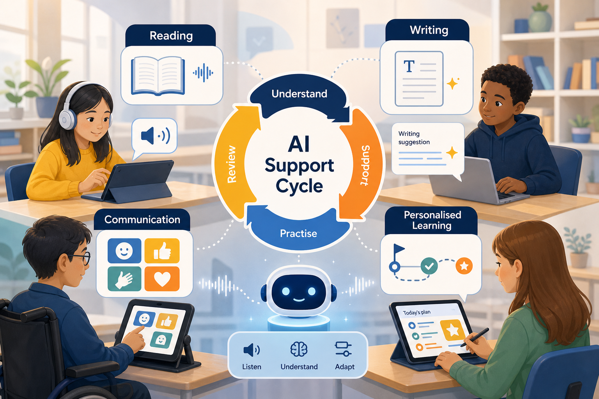

For many learners with special educational needs and disabilities, the biggest barrier is not ability. It is access.

For many learners with special educational needs and disabilities, the biggest barrier is not ability. It is access.
A learner may understand a concept but struggle to read the page. Another may have strong ideas but find writing physically or cognitively exhausting. A third may know the answer but need a different communication route to express it.
Used carefully, AI can help reduce some of those barriers.
This matters because inclusion cannot depend only on the learner adapting to the system. The system also has to adapt to the learner.
AI tools can support reading, writing, communication and personalised learning. They can read text aloud, simplify explanations, suggest sentence starters, translate information into more accessible language and help staff create differentiated resources more quickly.
The important point is balance. AI is not a replacement for SEND expertise, teaching skill, assessment judgement or human relationships. It is a support layer that can help learners participate more confidently when it is used responsibly.
AI can support SEND learners by improving access to reading, writing, communication and personalised learning.
In classrooms, colleges, training providers and workplace learning, SEND support is often stretched. Staff want to personalise learning, but time, workload and resource pressures can make this difficult.
AI can help by turning one resource into several accessible versions. A long reading passage can become a summary, a vocabulary list, a set of questions, an audio script or a visual sequence. A writing task can become a scaffolded plan. A complex instruction can become a step-by-step checklist.
This does not remove the need for professional review. It means staff can start from a stronger draft and spend more time checking suitability, building confidence and supporting the learner.
The real challenge is not whether AI can produce support materials. It can. The challenge is whether those materials are accurate, accessible, safe, respectful and appropriate for the learner.
SEND is not one single need. Learners may require different types of support depending on communication, sensory processing, attention, memory, language, confidence, physical access, emotional wellbeing or previous educational experience.
A generic AI output may look helpful but still miss the learner's real barrier. That is why AI must be guided by people who understand the learner, the curriculum and the purpose of the task.
This gap often happens because organisations introduce AI as a tool before developing inclusive practice around it.
Staff may not receive training on safe prompting, accessibility checking or data protection. Leaders may not have a clear policy for what can and cannot be entered into AI tools. Learners may not be taught how to use AI support ethically and independently.
The result is inconsistent practice. Some staff use AI well. Others avoid it completely. Some learners benefit. Others are left behind.
These examples show how the idea can be applied in everyday education, training and learner support practice.
A tutor uploads a non-confidential course handout and asks AI to create a plain-English summary, key vocabulary list and five comprehension questions. The tutor checks the output and adapts it to the learner's level.
A learner with strong verbal understanding uses AI-generated sentence starters to structure a reflection. The learner still provides the ideas, examples and final judgement.
A support worker uses AI to draft visual choice cards for a classroom activity, then checks the wording with the learner and teaching team.
A trainer creates three versions of an explanation: one with examples, one with a diagram structure and one with a shorter step-by-step format.
If organisations ignore this area, learners may continue to face avoidable barriers to participation.
There is also a risk of poor practice if AI is used without safeguards. Sensitive learner information should not be entered into unapproved tools. AI outputs should not be treated as automatically suitable. Accessibility is not achieved simply by generating more content.
The risk is two-sided: doing nothing can maintain exclusion, but using AI carelessly can create new problems.
Barriers can remain hidden, support can become inconsistent, and confidence can be damaged.
Quality, inclusion, safeguarding and assessment integrity can suffer when AI use is unmanaged.
A better way forward is to build AI into a wider inclusive learning strategy.
Organisations should train staff to use AI for resource adaptation, reading support, writing scaffolds and communication support while protecting learner privacy. They should agree quality checks for accuracy, tone, reading level and accessibility.
Learners should also be taught how to use AI as a learning support, not as a shortcut. That means asking better questions, checking outputs, developing independence and knowing when to seek human support.
gain more accessible explanations, increased confidence and more ways to participate.
can create differentiated support more efficiently while keeping professional oversight.
can strengthen inclusion, quality assurance and learner support systems.
may see learners become more independent and confident in learning.
The leadership question is simple but important: are we using AI to make learning more inclusive, or are we only using it to make existing processes faster?
If AI is introduced without inclusion at the centre, it may simply reproduce old barriers in a new format. If it is introduced thoughtfully, it can help organisations make support more flexible, responsive and learner-centred.
AI can support SEND learners by improving access to reading, writing, communication and personalised learning.
But the value does not come from the tool alone. It comes from professional judgement, inclusive design, safe governance and a commitment to learner dignity.
How could your organisation use AI to remove learning barriers without reducing the role of human support?
This article has been written as professional guidance, with factual claims checked against recognised education, accessibility and health-information sources.